بازگشت
بازگشت در سی شارپ با مثال¶
در این مقاله، من در مورد بازگشت در سی شارپ با مثالها صحبت خواهم کرد. در پایان این مقاله، نکات زیر را به طور مفصل خواهید فهمید.
- بازگشت در سی شارپ چیست؟
- منظور از تابع بازگشتی در سی شارپ چیست؟
- بازگشت در سی شارپ چگونه کار میکند؟
- چگونه یک تابع بازگشتی را در سی شارپ ردیابی کنیم؟
- مثالی برای درک بازگشت در سی شارپ
- مزایای بازگشت در زبان سی شارپ چیست؟
- معایب بازگشت در زبان سی شارپ چیست؟
- چگونه پیچیدگی زمانی یک تابع بازگشتی را در سی شارپ پیدا کنیم؟
بازگشت در سی شارپ چیست؟¶
قبل از درک بازگشت، ابتدا نگاهی به کد زیر میاندازیم. در اینجا، ما دو تابع داریم، یعنی تابع Main تابع Main و تابع fun و تابع fun را فراخوانی میکند.
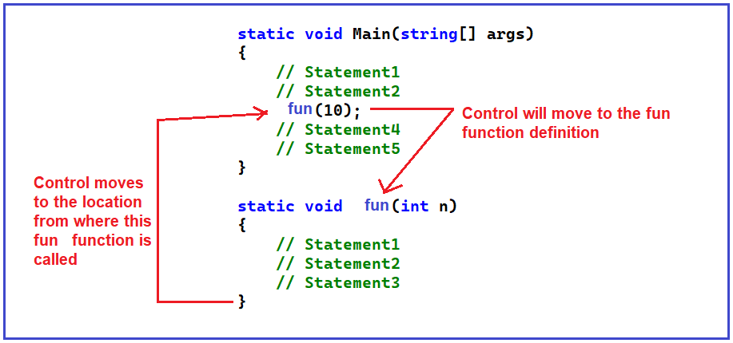
ابتدا باید بفهمیم که این فراخوانی تابع چگونه انجام میشود و چگونه کار میکند. به محض شروع اجرای برنامه، اجرای برنامه از متد Main شروع میشود. ابتدا، دستور اول را اجرا میکند، سپس دستور دوم را اجرا میکند و سپس دستور سوم را اجرا میکند، یعنی تابع fun را فراخوانی میکند. در اینجا، کنترل به تعریف تابع fun منتقل میشود و اجرای آن تابع fun را شروع میکند. در داخل تابع fun، اجرای دستور اول، دوم و سوم شروع میشود. پس از اتمام (به محض اینکه دستور سوم در داخل تابع fun اجرا شد)، کنترل به همان خط برمیگردد، یعنی خط سوم تابع Main که تابع fun از آنجا فراخوانی شده است. اگر عملیات دیگری در آن خط وجود داشته باشد، اجرا میشوند. در غیر این صورت، دستور چهارم، سپس دستور پنجم و غیره را اجرا میکند.
منظور از عملیات دیگر چیست؟¶
فرض کنید تابع fun چیزی را برمیگرداند و در تابع Main، ما با فراخوانی تابع fun، یعنی fun(1) + 2، عبارت added by 2 را نوشتهایم. بنابراین، مقدار بازگشتی از تابع fun باید دو برابر شود. این جمع باید زمانی انجام شود که تابع fun با مقداری به تابع Main برگردانده شود. فرض کنید تابع fun مقدار بازگشتی ۱۰۰ دارد. بنابراین، ۱۰۰+۲ فقط در صورتی قابل انجام است که fun(10) مقدار را برگردانده باشد. این نکته مهمی است که باید برای درک بازگشت به خاطر داشته باشید. برای درک بهتر، لطفاً به تصویر زیر نگاهی بیندازید.
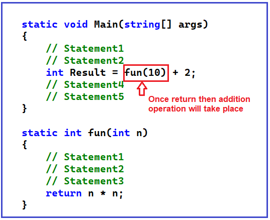
برای درک تابع بازگشتی، باید جریان کاری مثال زیر را درک کنیم. در مثال زیر، اجرای برنامه از متد main شروع میشود. از متد Main، تابع Fun1 و از تابع Fun1، متد Fun2 فراخوانی میشوند. دوباره، از تابع Fun2، متد Fun3 فراخوانی میشود و در نهایت، از تابع Fun3، تابع Fun4 فراخوانی میشود.
using System;
namespace RecursionDemo
{
class Program
{
static void Main(string[] args)
{
Console.WriteLine("Main Method Started");
fun1(4);
Console.WriteLine("Main Method Started");
Console.ReadKey();
}
static void fun1(int n)
{
Console.WriteLine("Fun1 Started");
fun2(3);
Console.WriteLine("Fun1 Ended");
}
static void fun2(int n)
{
Console.WriteLine("Fun2 Started");
fun3(2);
Console.WriteLine("Fun2 Ended");
}
static void fun3(int n)
{
Console.WriteLine("Fun3 Started");
fun4(1);
Console.WriteLine("Fun3 Ended");
}
static void fun4(int n)
{
Console.WriteLine("Fun4 Started");
Console.WriteLine("Fun4 Ended");
}
}
}
خروجی:¶
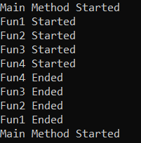
نکتهای که باید بفهمیم این است که چه زمانی اجرای متد Main، متدهای Fun1، Fun2، Fun3 و Fun4 تکمیل خواهد شد. همانطور که در خروجی بالا مشاهده میکنید، ابتدا متد Main، سپس متد Fun1، سپس Fun2، سپس Fun3 و در نهایت اجرای متد Fun4 آغاز شده است. اما ابتدا اجرای متد Fun4 به پایان رسید، سپس اجرای Fun3 به پایان رسید، سپس Fun2، سپس Fun1 و در نهایت اجرای متد Main به پایان رسید.
نکتهای که باید به خاطر داشته باشید این است که وقتی ما یک متد (مثلاً F2) را از متد دیگری (مثلاً F1) فراخوانی میکنیم، اجرای متد F1 فقط زمانی تکمیل میشود که اجرای متد F2 تکمیل شده باشد. این بدان معناست که ابتدا، اجرای متد فراخوانی شده باید تکمیل شود و سپس فقط اجرای متد فراخواننده تکمیل خواهد شد. با این حال، این مورد در برنامهنویسی ناهمزمان صدق نمیکند. این مورد در برنامهنویسی همزمان صدق میکند. با در نظر گرفتن این نکته، بیایید ادامه دهیم و بفهمیم که یک تابع بازگشتی در C# چیست.
منظور از تابع بازگشتی در سی شارپ چیست؟¶
فراخوانی تابعی که خودش را فراخوانی میکند، بازگشت (Recursion) نامیده میشود. یا به عبارت ساده، میتوانیم بگوییم که بازگشت فرآیندی است که در آن یک تابع به طور مکرر خود را فراخوانی میکند تا زمانی که یک شرط مشخص برآورده شود. این شبیه به یک حلقه است، در حلقه، تا زمانی که شرط حلقه برآورده شود، حلقه اجرا میشود و به همین ترتیب، تا زمانی که شرط برآورده شود، تابع خود را فراخوانی میکند.
برای حل یک مسئله به صورت بازگشتی، دو شرط باید برقرار باشد. اول، مسئله باید به شکل بازگشتی نوشته شود تا تابع خودش را فراخوانی کند، و دوم، عبارت مسئله باید شامل یک شرط توقف باشد تا بتوانیم فراخوانی تابع را متوقف کنیم.
مهمترین نکتهای که باید به خاطر داشته باشید این است که اگر یک تابع بازگشتی شامل متغیرهای محلی باشد، در هر فراخوانی، مجموعهای متفاوت از متغیرهای محلی ایجاد میشوند. متغیرها هر بار که تابع اجرا میشود، مقادیر متفاوتی را نشان میدهند. هر مجموعه از مقادیر در حافظه پشته ذخیره میشوند. اگر در حال حاضر این موضوع برایتان واضح نیست، نگران نباشید، این موارد را هنگام شروع بحث در مورد مثالها توضیح خواهیم داد. شکل کلی بازگشت در زیر آمده است.
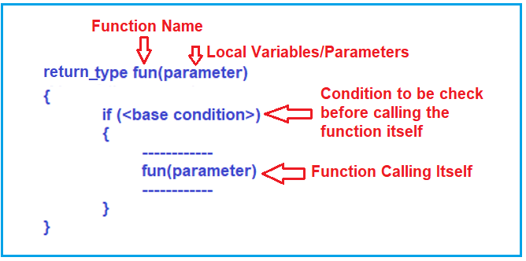
این شکل کلی یک تابع بازگشتی است، یعنی یک تابع خودش را فراخوانی میکند. در داخل بدنه تابع، اگر دیدید که دوباره و دوباره خودش را فراخوانی میکند، پس یک تابع بازگشتی است.
نکته مهم دیگری که باید به خاطر داشته باشید این است که درون یک تابع بازگشتی، میتوانید یک شرط پایه را ببینید. این بدان معناست که باید یک شرط پایه برای خاتمه دادن به بازگشت وجود داشته باشد. این شبیه به یک حلقه است؛ اگر یک حلقه داشته باشید و هیچ شرطی برای خاتمه دادن به حلقه وجود نداشته باشد، یک حلقه بینهایت خواهید داشت. بنابراین، باید راههایی برای خاتمه دادن به بازگشت وجود داشته باشد. در غیر این صورت، به فراخوانی بینهایت میرود. ابتدا، باید تابع را برای اولین بار فراخوانی کنیم. سپس، از بار دوم به بعد، خود را بارها و بارها فراخوانی میکند. بنابراین، باید شرطی وجود داشته باشد که تحت آن باید متوقف شود.
همانطور که در تصویر بالا مشاهده میکنید، تابع تا زمانی که شرط پایه درست باشد، خود را فراخوانی میکند. در اینجا، اگر شرط نادرست شود، دیگر فراخوانی نمیشود و متوقف میشود. اینگونه است که بازگشت در زبان C# کار میکند. حال، بیایید بیشتر پیش برویم و چند مثال برای درک بازگشت و نحوه دقیق عملکرد آن ببینیم.
بازگشت در سی شارپ چگونه کار میکند؟¶
بیایید برای درک نحوهی عملکرد بازگشت، به یک مثال نگاهی بیندازیم. لطفاً به مثال زیر نگاهی بیندازید. در اینجا، تابع Main را داریم که مقداری در متغیر x دارد و سپس تابع fun1 را فراخوانی میکند و مقدار آن متغیر X را ارسال میکند. تابع fun1 که پارامتر n را میگیرد، مقدار x را میپذیرد و اگر شرط «درست» باشد، مقدار را چاپ میکند و سپس خودش را فراخوانی میکند. بنابراین، در اینجا، برای مقدار کاهشیافتهی n، خودش را چاپ و دوباره فراخوانی میکند.
using System;
namespace RecursionDemo
{
class Program
{
static void Main(string[] args)
{
int x = 3;
fun1(x);
Console.ReadKey();
}
static void fun1(int n)
{
if (n > 0)
{
Console.Write($"{n} ");
fun1(n - 1);
}
}
}
}
در مثال بالا، ما عدد ۳ را از تابع main به تابع fun1 ارسال میکنیم. بیایید ببینیم نتیجه چه خواهد بود و چگونه کار میکند. بیایید این تابع بازگشتی را ردیابی و بررسی کنیم.
چگونه یک تابع بازگشتی را در سی شارپ ردیابی کنیم؟¶
یک تابع بازگشتی به شکل یک درخت ردیابی میشود. بنابراین، بیایید شروع به ردیابی مثال بالا کنیم. وقتی شرط درون تابع fun1 درست باشد، دو دستور برای اجرا وجود دارد. در دستور اول، مقدار n را چاپ میکند و در دستور دوم، خود را به صورت (n-1) ارسال میکند و این کار فقط زمانی باید انجام شود که n بزرگتر از 0 باشد.
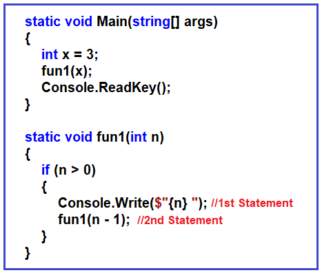
fun1(3):¶
بیایید ردیابی را شروع کنیم، از تابع main، ما تابع fun1 را فراخوانی میکنیم که X را ارسال میکند، یعنی مقدار ۳. بنابراین، اولین باری که متغیر n مقدار ۳ را دارد، ۳ بزرگتر از ۰ است و از این رو، شرط درست میشود. بنابراین، مرحله اول چاپ n است، یعنی ۳ را چاپ میکند، و مرحله دوم فراخوانی دوباره خودش به نام fun1 برای ۳-۱ است، یعنی ۲. در اینجا، فراخوانی fun1(3) کامل نشده است. دوباره خودش را فراخوانی میکند.
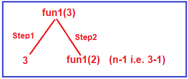
fun1(2):¶
بنابراین، دوباره خودش را فراخوانی میکند و مقدار n را به عنوان 2 ارسال میکند، یعنی fun1(2). بنابراین، بیایید fun1(2) را اجرا کنیم، دوباره شروع به کار میکند و شرط را بررسی میکند، حالا برای این تابع، مقدار n برابر با 2 است و 2 بزرگتر از 0 است و از این رو شرط درست میشود. بنابراین، اولین قدم چاپ مقدار n است، یعنی 2 را چاپ میکند و سپس دوباره خودش را با کاهش مقدار n به اندازه 1 فراخوانی میکند، یعنی fun1(n-1) و مقدار n فعلی 2 است، بنابراین، تابع fun1(1) را فراخوانی میکند. اما به یاد داشته باشید، فراخوانی fun1(2) هنوز تمام نشده است؛ فقط 2 را چاپ کرده است و باید fun1(1) را فراخوانی کند.
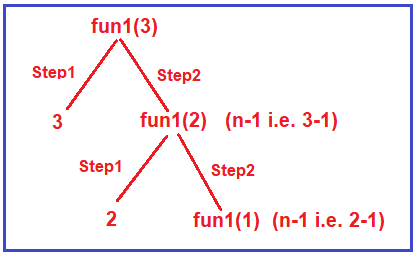
fun1(1):¶
بنابراین دوباره، یک فراخوانی جدید، یک فراخوانی تازه، آن فراخوانی تازه fun1(1) است. 1 بزرگتر از 0 است، بنابراین باید دو مرحله را انجام دهیم. مرحله اول چاپ 1 و سپس فراخوانی خودش با کاهش مقدار n به اندازه 1 است، یعنی fun1(n-1)، و مقدار n فعلی 1 است، بنابراین fun1(0) را فراخوانی خواهد کرد. اما نکتهای که باید به خاطر داشته باشید این است که فراخوانی fun1(1) هنوز تمام نشده است، 1 را چاپ کرده و باید fun1(0) را فراخوانی کند.
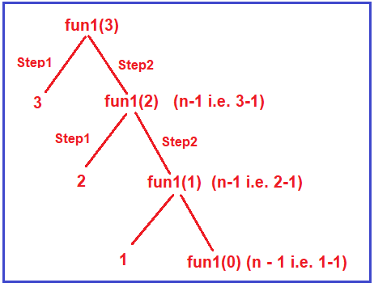
fun1(0):¶
حالا، fun1(0)، یعنی مقدار n فعلی برای این فراخوانی 0 است و شرط را بررسی میکند، یعنی 0 بزرگتر از 0 است و این بار، شرط نادرست میشود. بنابراین، وارد بلوک if نمیشود و آن دو مرحله را اجرا نمیکند. بنابراین، این بار، هیچ چاپ و فراخوانی وجود ندارد و بعد از بلوک if، آیا دستوری برای اجرا وجود دارد؟ خیر، هیچ دستوری بعد از بلوک if برای اجرا وجود ندارد. بنابراین، فقط به خارج از تابع میآید. این باعث پایان فراخوانی fun1(0) میشود و از اینجا، کنترل به فراخوانی تابع قبلی برمیگردد و به همین ترتیب ادامه مییابد و در نهایت از fun1 به تابع اصلی که در ابتدا فراخوانی شده است، میرسد. بنابراین، یک تابع بازگشتی یک درخت تشکیل میدهد و به این درخت ردیابی یک تابع بازگشتی گفته میشود.
بنابراین، وقتی مثال بالا را اجرا میکنید، خروجی ۳ ۲ ۱ را دریافت خواهید کرد. حال، یک مثال دیگر میزنیم.
مثال برای درک بازگشت در سی شارپ:¶
بیایید با یک مثال دیگر، مفهوم بازگشت در سی شارپ را درک کنیم. لطفاً به مثال زیر نگاهی بیندازید، که آن هم نمونهای از تابع بازگشتی در سی شارپ است.
using System;
namespace RecursionDemo
{
class Program
{
static void Main(string[] args)
{
int x = 3;
fun2(x);
Console.ReadKey();
}
static void fun2(int n)
{
if (n > 0)
{
fun2(n - 1);
Console.Write($"{n} ");
}
}
}
}
مثال بالا بسیار شبیه به مثال اولی است که در موردش صحبت کردیم. بگذارید هر دو مثال را با هم مقایسه کنم و تفاوت را به شما نشان دهم.
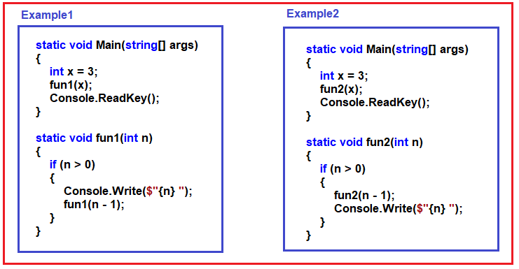
اگر به تابع main هر دو مثال نگاه کنید، آنها یک متغیر به نام x دارند و یک تابع را فراخوانی میکنند (مثال ۱ تابع fun1 و مثال ۲ تابع fun2 را فراخوانی میکند) که مقدار x را به آن ارسال میکند.
تفاوت هر دو مثال این است که در مثال ۱، درون تابع fun1، اگر شرط درست باشد (یعنی n > 0)، ابتدا مقدار n را چاپ میکند و سپس خودش را فراخوانی میکند، اما در مثال ۲، درون تابع fun2 اگر شرط درست باشد (یعنی n > 0)، ابتدا خودش را فراخوانی میکند و سپس مقدار n را چاپ میکند، سپس خروجی چه خواهد بود. بیایید مثال ۲ را ردیابی کنیم و خروجی را پیدا کنیم.
fun2(3):¶
اجرای برنامه از تابع Main شروع میشود. تابع Main با ارسال مقدار ۳، یعنی fun2(3)، تابع fun2 را فراخوانی میکند. درون تابع fun2، ابتدا بررسی میکند که آیا n > 0 است یا خیر، و در اینجا n برابر با ۳ است، بنابراین ۳ بزرگتر از ۰ است و شرط برقرار است. بنابراین، اولین دستور درون بلوک if اجرا خواهد شد، یعنی با ارسال n-1، یعنی ۲، تابع fun2 را فراخوانی میکند. در مورد دستور دوم، یعنی چاپ چطور؟ در این نقطه از زمان اجرا نخواهد شد. نکتهای که باید به خاطر داشته باشید این است که برای اجرای دستور دوم، یعنی چاپ، باید دستور اول تمام شده باشد. برای درک بهتر، لطفاً به تصویر زیر نگاهی بیندازید.
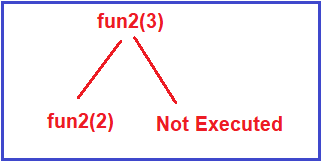
fun2(2):¶
بیایید فراخوانی fun2(2) را در نظر بگیریم، با n=2، شرط دوباره برقرار است زیرا 2 بزرگتر از 0 است. دوباره، دو مرحله، ابتدا fun2 را با n-1 فراخوانی میکند، یعنی خودش را برای n مقدار 1 فراخوانی میکند، یعنی fun2(1) و دستور دوم در این مرحله اجرا نخواهد شد. پس از اتمام اجرای دستور اول، فقط دستور دوم اجرا میشود. در این مرحله، درخت ردیابی مانند شکل زیر خواهد بود.
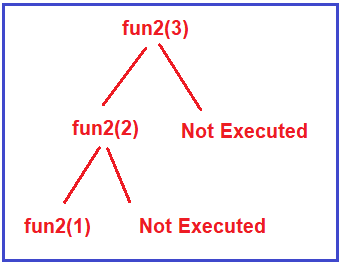
fun2(1):¶
بیایید fun2(1) را ردیابی کنیم. دوباره 1 بزرگتر از 0 است و از این رو شرط برقرار است و دوباره دو مرحله انجام میدهیم. در مرحله اول، خودش را با دور زدن n-1 فراخوانی میکند، یعنی fun2(0)، و به همین ترتیب، دستور دوم فقط زمانی اجرا میشود که دستور اول اجرای خود را کامل کند. بنابراین، در این مرحله، درخت ردیابی این تابع بازگشتی مانند شکل زیر است.
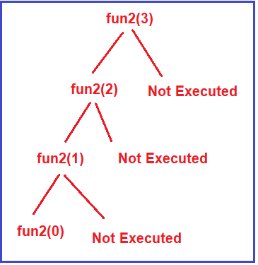
fun2(0):¶
فراخوانی بعدی fun2(0) است. حالا fun2(0)، 0 بزرگتر از 0 است، نه. شرط برقرار نیست. بنابراین، وارد این بلوک if نمیشود و بیرون میآید، یعنی هیچ کاری انجام نمیدهد. بنابراین، این فراخوانی با پارامتر 0 خاتمه یافته است.
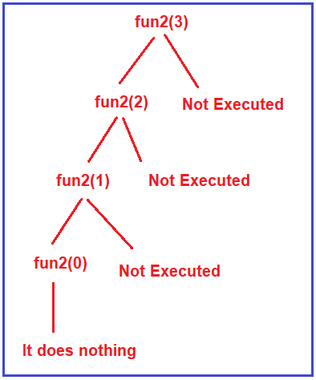
پس از پایان این فراخوانی، کنترل به فراخوانی قبلی باز میگردد. فراخوانی قبلی fun2(1) بود؛ به فراخوانی تابع برمیگردد و دستور بعدی، یعنی دستور دوم، را اجرا میکند که چیزی جز چاپ مقدار n نیست. در این فراخوانی، مقدار n برابر با ۱ است؛ از این رو، ۱ را چاپ خواهد کرد. برای درک بهتر، لطفاً به تصویر زیر نگاهی بیندازید.
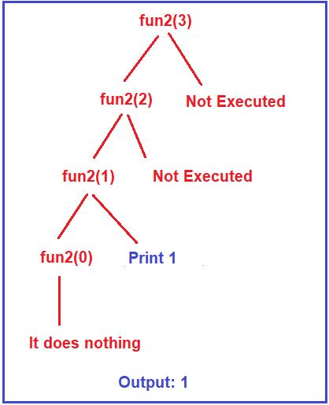
سپس به فراخوانی قبلی یعنی fun2(2) برمیگردد و دومین چیزی که اینجا باقی میماند چاپ است، بنابراین مقدار 2 چاپ میشود و سپس از این تابع خارج شده و کار تمام میشود. برای درک بهتر، لطفاً به تصویر زیر نگاهی بیندازید.
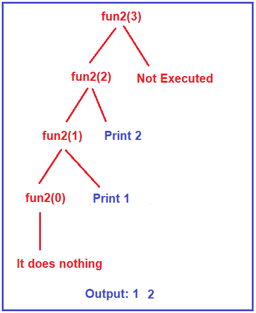
پس از پایان فراخوانی fun2(2)، به فراخوانی قبلی، یعنی fun2(3) برمیگردد و دومین چیزی که در اینجا باقی میماند چاپ است، بنابراین مقدار 3 چاپ میشود. خروجی این تابع 1 2 3 است، همانطور که در تصویر زیر نشان داده شده است.
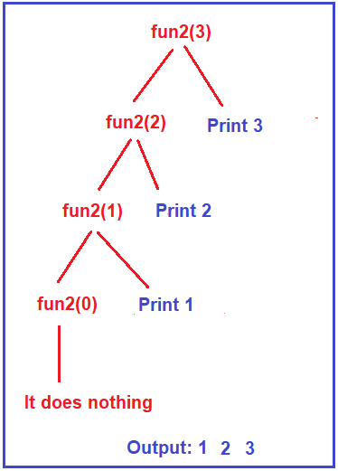
پس از اتمام اجرای fun(3)، کنترل به متد Main برمیگردد، جایی که تابع fun1 را فراخوانی میکنیم. بنابراین، خروجی مثال ۱، ۳، ۲، ۱ و خروجی مثال ۲، ۱، ۲، ۳ بود.
حال، بیایید هر دو مثال را با هم مقایسه کنیم، در مثال ۱، ابتدا چاپ انجام شد و سپس فراخوانی بازگشتی انجام شد، اما در مثال ۲، ابتدا فراخوانی بازگشتی انجام شد و سپس چاپ در زمان بازگشت انجام شد.
نکته: مهمترین نکتهای که باید در مورد بازگشت بدانید این است که دو مرحله دارد. یکی مرحله فراخوانی و دیگری مرحله بازگشت.
محاسبه فاکتوریل یک عدد با استفاده از توابع بازگشتی:¶
در مثال زیر، تابع فاکتوریل بازگشتی خود را تعریف میکنیم که یک پارامتر عدد صحیح میگیرد و فاکتوریل این پارامتر را برمیگرداند. این تابع تا زمانی که شرط پایه برقرار باشد، خود را با مقدار کاهش یافته عدد فراخوانی میکند. وقتی شرط برقرار باشد، مقادیر تولید شده قبلی در یکدیگر ضرب میشوند و مقدار فاکتوریل نهایی بازگردانده میشود. ما یک متغیر عدد صحیح را با مقدار ۵ تعریف و مقداردهی اولیه میکنیم و سپس با فراخوانی تابع فاکتوریل، مقدار فاکتوریل آن را چاپ میکنیم.
using System;
namespace RecursionDemo
{
class Program
{
static void Main(string[] args)
{
int x = 5;
Console.WriteLine($"The factorial of {x} is {factorial(x)}");
Console.ReadKey();
}
static int factorial(int number)
{
if (number == 1)
{
return (1); /* exiting condition */
}
else
{
return (number * factorial(number - 1));
}
}
}
}
خروجی: فاکتوریل عدد ۵ برابر با ۱۲۰ است.****
بیایید خروجی Tracing Tree را درک کنیم. درخت ردیابی زیر زمان فراخوانی تابع Recursive را نشان میدهد. وقتی مقدار n را به عنوان ۱ ارسال میکنیم، خود تابع فراخوانی نمیشود، بلکه ۱ را به فراخوانی قبلی خود برمیگرداند و همین روند تا زمانی که به مقدار n یعنی ۵ برسد، ادامه مییابد.
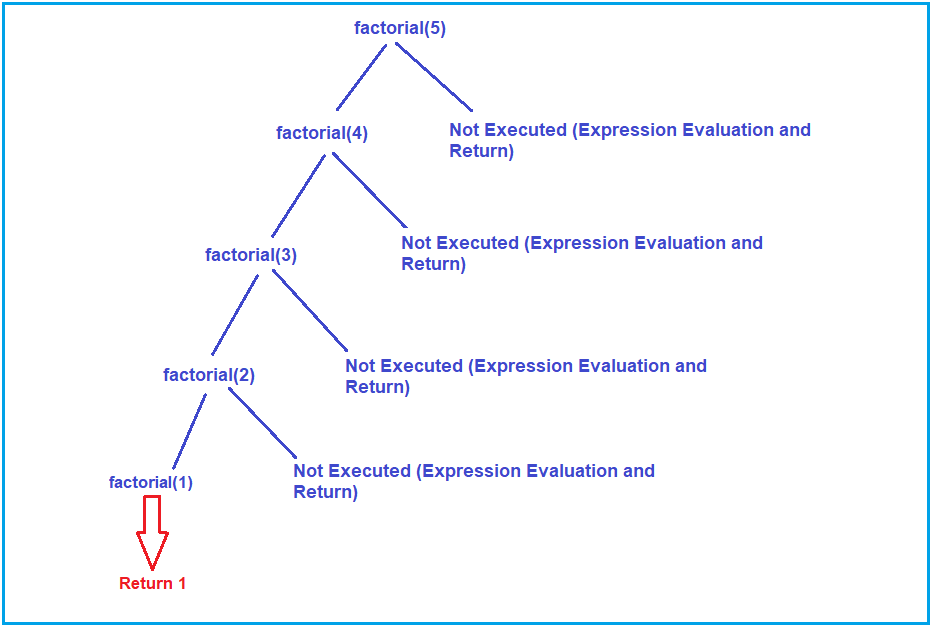
درخت ردیابی زیر زمان بازگشت تابع بازگشتی را نشان میدهد.
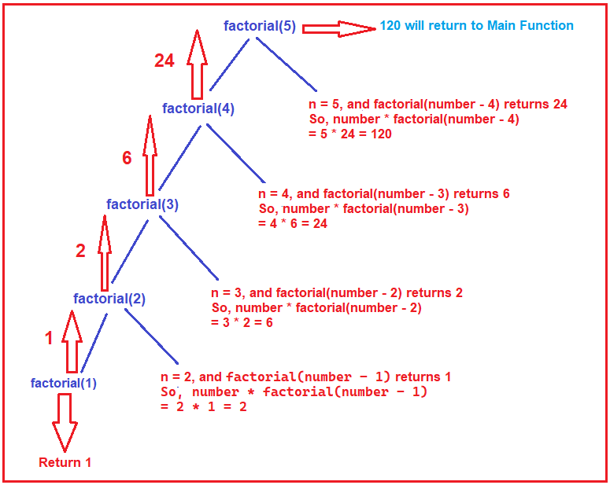
مزایای بازگشت در زبان سی شارپ چیست؟¶
- اطلاعات مربوط به فراخوانی تابع توسط بازگشتی نگهداری میشود.
- ارزیابی پشته با استفاده از بازگشت انجام خواهد شد.
- نمادهای پیشوند، پسوند و میانوند با استفاده از بازگشت ارزیابی میشوند.
معایب بازگشت در زبان سی شارپ چیست؟¶
- به دلیل همپوشانی پشتهها، این فرآیند بسیار کند است.
- برنامه بازگشتی میتواند باعث سرریز پشته (stack overflow) شود.
- برنامه بازگشتی میتواند حلقههای بینهایت ایجاد کند.
چگونه پیچیدگی زمانی یک تابع بازگشتی را در سی شارپ پیدا کنیم؟¶
بیایید ابتدا مفهوم اساسی برای یافتن پیچیدگی زمانی را درک کنیم. فرض میکنیم که هر دستور در برنامه ما برای اجرا به یک واحد زمان نیاز دارد.
بگذارید ایده پشت این ایده را بیان کنم. فرض کنید تعدادی کتاب در یک مکان نگهداری میشوند و شما باید کتاب را جابجا کنید و آن را روی قفسه یا طاقچه قرار دهید. چقدر زمان طول میکشد؟ شاید نیم ثانیه، یک چهارم ثانیه، شاید اگر کسی خیلی آهسته کار کند، ممکن است یک ثانیه طول بکشد تا یک کتاب آنجا بماند. زمان از فردی به فرد دیگر متفاوت است. بنابراین، ما ثانیه یا میلیثانیه را ذکر نمیکنیم و یک واحد زمان میگوییم. فرض کنید مثال ارز را در نظر بگیرید: یک دلار، یک روپیه و یک پوند. ما میگوییم یک، اما ارزش بازاری که ممکن است متفاوت باشد چیست؟ بنابراین، ما میگوییم یک دلار یا یک واحد پول.
به همین ترتیب، فرض میکنیم که هر دستور یک واحد زمان طول میکشد. اگر آن دستور چندین بار تکرار شود، باید فرکانس و تعداد دفعات اجرای آن را بشماریم. این برای تحلیل تابع ما کافی است.
مثال برای محاسبه پیچیدگی زمانی یک تابع بازگشتی در سی شارپ:¶
برای محاسبه پیچیدگی زمانی از تابع بازگشتی زیر استفاده خواهیم کرد.
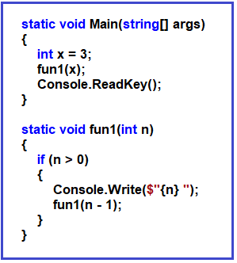
حالا، بیایید ببینیم تابع بالا (fun1) چه کاری انجام میدهد. هیچ کاری انجام نمیدهد، فقط چاپ میکند. فقط مقدار n را چاپ میکند.
چقدر زمان برای چاپ لازم است؟ برای چاپ به یک واحد زمان نیاز است.
تابع Console.Write() چند بار در آنجا نوشته شده است؟ فقط یک بار Console.Write() در آنجا نوشته شده است. اما این یک تابع بازگشتی است. بنابراین، بارها و بارها خودش را فراخوانی میکند. از آنجایی که این یک تابع بازگشتی است، بیایید بفهمیم تابع Console.Write() چند بار اجرا شده است. همانطور که قبلاً بحث کردیم، میتوانیم این را با استفاده از درخت ردیابی یا درخت بازگشتی بفهمیم.
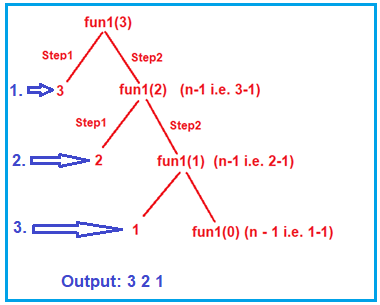
همانطور که در درخت ردیابی بالا مشاهده میکنید، ابتدا مقدار ۳، سپس ۲ و در نهایت مقدار ۱ چاپ میشود. این بدان معناست که دستور Console.Write() سه بار اجرا میشود. بنابراین، این تابع بازگشتی وقتی مقدار n برابر با ۳ باشد، ۳ واحد زمان برای اجرا نیاز دارد. اگر مقدار n را ۵ قرار دهیم، اجرای این تابع بازگشتی ۵ واحد زمان خواهد برد.
بنابراین، میتوانیم بگوییم برای n، n واحد زمان لازم است. به مثال برمیگردیم، اگر مجبور باشیم یک کتاب را در قفسه نگه داریم. شما یک واحد زمان و برای 10 کتاب 10 واحد زمان لازم خواهید داشت. بنابراین، برای n تعداد کتاب، n واحد زمان لازم است. مهمترین نکتهای که باید به خاطر داشته باشید این است که زمان به تعداد کتابها بستگی دارد. زمان را میتوان به صورت مرتبه n، یعنی O(n) نشان داد. زمان صرف شده به ترتیب n است.
متغیرها در یک تابع بازگشتی چگونه کار میکنند؟¶
بیایید با یک مثال ببینیم که یک متغیر چگونه با یک تابع بازگشتی کار میکند. ما قبلاً در مورد نحوه ردیابی توابع بازگشتی بحث کردهایم. برای درک بهتر، لطفاً به مثال زیر نگاهی بیندازید.
using System;
namespace RecursionDemo
{
class Program
{
static void Main(string[] args)
{
int number = 5;
int Result = fun(number);
Console.WriteLine(Result);
Console.ReadKey();
}
static int fun(int n)
{
if(n > 0)
{
return fun(n - 1) + n;
}
return 0;
}
}
}
همانطور که در کد بالا میبینید، تابعی به نام fun وجود دارد که یک پارامتر، یعنی n از نوع عدد صحیح، میگیرد. سپس، اگر مقدار n بزرگتر از 0 باشد، خودش را با مقدار کاهش یافته n (یعنی n - 1) فراخوانی میکند و n را نیز اضافه میکند. بنابراین، این جمع n (یعنی +n) چه زمانی انجام میشود (زمان فراخوانی یا زمان بازگشت)؟ این کار در زمان بازگشت انجام میشود. اگر مقدار n برابر با 0 باشد، 0 را برمیگرداند. از تابع main، تابع fun را با ارسال a یعنی 5 فراخوانی کردیم. بیایید تابع بازگشتی فوق را ردیابی کنیم. تصویر زیر ردیابی فراخوانی fun را نشان میدهد.
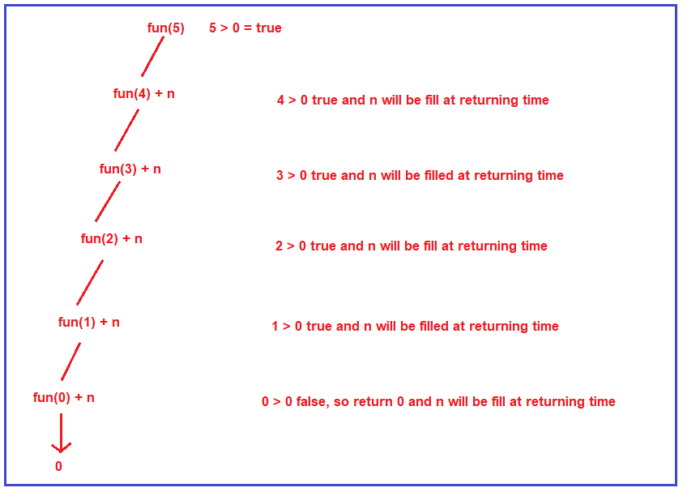
ابتدا، تابع fun برای مقدار ۵ فراخوانی میشود و آیا ۵ از ۰ بزرگتر است؟ بله، بنابراین خود را با مقدار کاهشیافتهی n یعنی ۴ فراخوانی میکند و n یعنی ۵ در زمان بازگشت اضافه میشود. سپس بررسی میکند که آیا ۴ از ۰ بزرگتر است یا خیر، بله، بنابراین دوباره خود را با مقدار کاهشیافتهی n یعنی ۳ فراخوانی میکند و مقدار n فعلی یعنی ۴ در زمان بازگشت اضافه میشود. به این ترتیب، خود را تا زمانی که مقدار n برابر با ۰ شود، فراخوانی میکند. وقتی مقدار n برابر با ۰ شود، شرط نادرست میشود و خود را فراخوانی نمیکند. در عوض، به سادگی ۰ را برمیگرداند. از این به بعد، بازگشت اتفاق میافتد و به نتیجهی هر فراخوانی تابع، مقدار n اضافه میشود. برای درک بهتر، لطفاً به تصویر زیر نگاهی بیندازید.
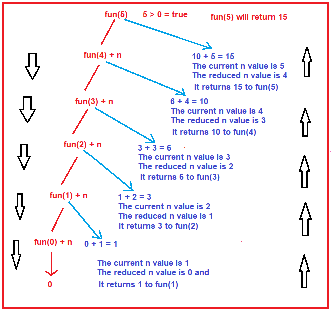
بیایید بفهمیم که بازگشت چگونه گام به گام اتفاق میافتد
- Fun(0) + n: در این حالت، مقدار n فعلی ۱ و مقدار n کاهشیافته ۰ است و fun(0) مقدار ۰ را برمیگرداند و مقدار n فعلی یعنی ۱ با نتیجه fun(0) جمع میشود. بنابراین، این تابع ۱ را به فراخوانی تابع قبلی، یعنی fun(1)، برمیگرداند، یعنی نتیجه تابع fun(1) برابر با ۱ خواهد بود.
- Fun(1) + n: در این حالت، مقدار n فعلی ۲ است و مقدار n کاهشیافته ۱ است و fun(1) مقدار ۱ (خروجی فراخوانی تابع قبلی) را برمیگرداند و مقدار n فعلی، یعنی ۲، با نتیجه fun(1) جمع میشود. بنابراین، این مقدار ۳ را به فراخوانی تابع قبلی، یعنی fun(2)، برمیگرداند، یعنی نتیجه تابع fun(2) برابر با ۳ خواهد بود.
- Fun(2) + n: در این حالت، مقدار n فعلی ۳ است و مقدار n کاهشیافته ۲ است و fun(2) عدد ۳ (خروجی فراخوانی تابع قبلی) را برمیگرداند و مقدار n فعلی، یعنی ۳، با نتیجه fun(2) جمع میشود. بنابراین، این مقدار ۶ را به فراخوانی تابع قبلی، یعنی fun(3)، برمیگرداند، یعنی نتیجه تابع fun(3) عدد ۶ خواهد بود.
- Fun(3) + n: در این حالت، مقدار n فعلی ۴ است و مقدار n کاهشیافته ۳ است و fun(3) عدد ۶ (خروجی فراخوانی تابع قبلی) را برمیگرداند و مقدار n فعلی، یعنی ۴، با نتیجه fun(3) جمع میشود. بنابراین، این تابع عدد ۱۰ را به فراخوانی تابع قبلی، یعنی fun(4)، برمیگرداند، یعنی نتیجه تابع fun(4) برابر با ۱۰ خواهد بود.
- Fun(4) + n: در این حالت، مقدار n فعلی ۵ است و مقدار n کاهشیافته ۴ است و fun(4) عدد ۱۰ (خروجی فراخوانی تابع قبلی) را برمیگرداند و مقدار n فعلی، یعنی ۵، با نتیجه fun(4) جمع میشود. بنابراین، این تابع عدد ۱۵ را به فراخوانی تابع قبلی، یعنی fun(5)، برمیگرداند، یعنی نتیجه تابع fun(5) برابر با ۱۵ خواهد بود.
بنابراین، در نهایت، fun(5) مقدار 15 را برمیگرداند. این تابع بالا را زمانی که با مقدار 5 فراخوانی میشود، ردیابی میکند. حال، بیایید ببینیم که چگونه رکورد فعالسازی ایجاد میشود. رکورد فعالسازی برای تابع fun ایجاد خواهد شد. برای هر مقدار n، یعنی (5، 4، 3، 2، 1، 0)، یک رکورد فعالسازی در پشته ایجاد میشود، همانطور که در تصویر زیر نشان داده شده است. به این ترتیب پشته هر بار برای هر فراخوانی ایجاد میشود.
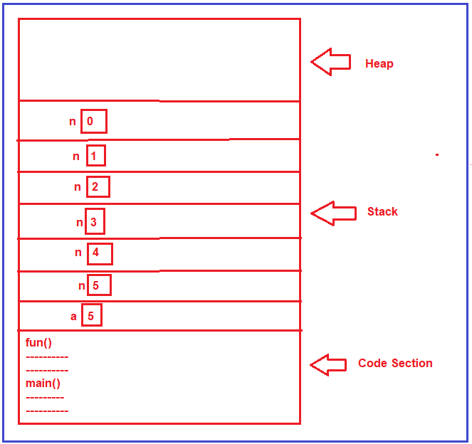
در این حالت، میتوانید ببینید که متغیر n شش بار در ناحیه پشته ایجاد میشود. میتوانیم مثال بالا را با استفاده از یک حلقه بنویسیم که فقط یک بار متغیر n را ایجاد میکند. بیایید مثال قبلی را با استفاده از یک حلقه بازنویسی کنیم.
using System;
namespace RecursionDemo
{
class Program
{
static void Main(string[] args)
{
int number = 5;
int Result = fun(number);
Console.WriteLine(Result);
Console.ReadKey();
}
static int fun(int n)
{
int Result = 0;
for(int i = 1; i <= n; i++)
{
Result = Result + i;
}
return Result;
}
}
}
وقتی مثال بالا را اجرا کنید، خروجی مشابه مثال قبلی را دریافت خواهید کرد.